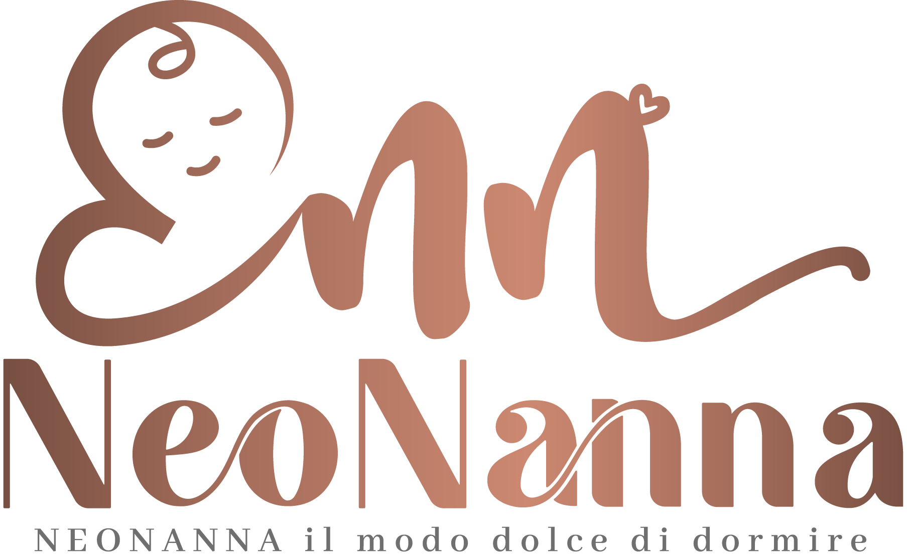
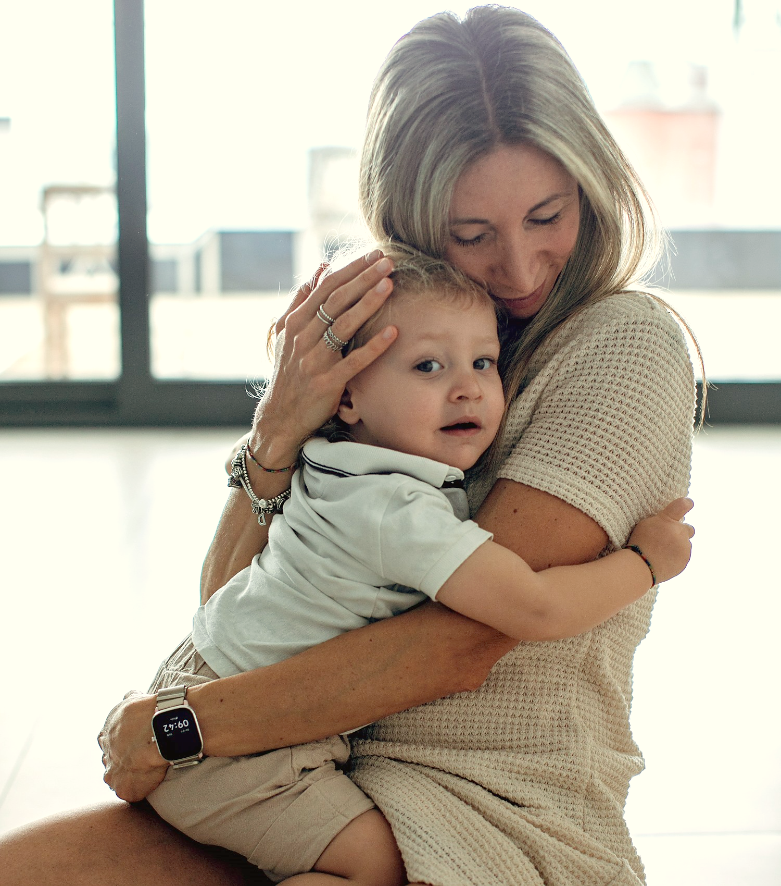
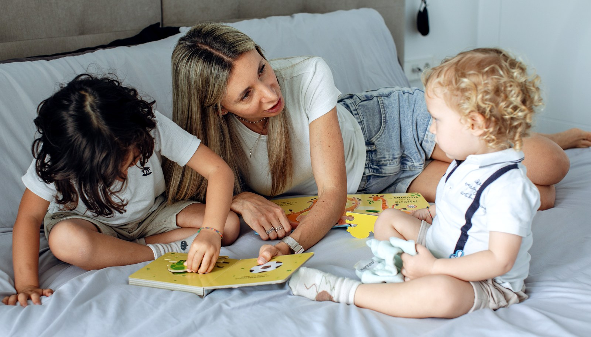

Videolezioni gratuiteTuo figlio può dormire. E tu con lui.
Risvegli continui, addormentamenti infiniti,
pisolini solo in braccio...
Non sei tu che sbagli.
E il tuo bimbo non è difficile.
Semplicemente ti manca la giusta guida.
In 3 videolezioni gratuite ti mostro da dove partire, anche stanotte.
Gratuite, senza impegno. Guardale quando vuoi.

Ogni famiglia arriva a me con la stessa frase: «Abbiamo già provato di tutto». Quasi sempre il problema non è il bambino. E nemmeno il genitore.
Il problema sono le informazioni che ti sono state date.
E ogni volta serve il seno, il braccio o l'auto per farlo riaddormentare.
In tre nel lettone (o il papà in divano!), e nessuno riposa davvero.
Le giornate diventano lunghissime e non hai nemmeno 5 minuti per farti una doccia.
La nanna è diventata il momento più difficile della giornata. La affronti con ansia e preoccupazione.
Tre video brevi in cui ti spiego perché il tuo bimbo non dorme e cosa puoi fare per aiutarlo, nell'ordine giusto. È il modo migliore per capire se il mio metodo è quello giusto per la tua famiglia.
Guarda le videolezioni gratuiteQuello che nessuno ti dice sui risvegli notturni.
Le frasi che ti tengono ferma — e come superarle.
Cosa fare già dalla prossima nanna.
Al termine di ogni video potrai mandarmi un messaggio su WhatsApp e ricevere un mio feedback personale.
Sono Debora Azzalin, mamma e Consulente del Sonno Infantile. Ho conosciuto le notti spezzate prima come genitore che come professionista: è lì che ho capito quanto il sonno cambi tutto — l'umore, la coppia, il modo in cui guardi tuo figlio.
Oggi accompagno le famiglie con un approccio empatico e strutturato, rispettoso dei tempi del bambino e adattato alla vostra vita reale. Niente ricette copiate da internet: un piano tuo, e io accanto finché non funziona.
Il metodo Sleep Sense®, di cui sono consulente certificata, è stato riconosciuto da:
Due esempi di percorsi raccontati dalle mamme che li hanno fatti,
con i tempi e i risultati reali — a due età diverse.
Si svegliava ogni ora da 6 mesi. La situazione non era più sostenibile per i genitori.
«Dalla prima notte Beatrice ha dormito serenamente senza risvegli, eravamo increduli!»
Arrivato con risvegli continui e pisolini solo in braccio, dopo mesi di notti spezzate.
«Dopo soli 3 giorni Lars dormiva nella sua stanza e gestiva i risvegli in autonomia.»
Recensioni verificate dalla pagina Facebook «NeoNanna Dolce Dormire» e video registrati dai genitori a percorso finito.
«Si svegliava in continuazione, anche 6, 7, 8 volte a notte, alcune volte già dopo 45 minuti. Ora dorme 10/11 ore a notte senza risvegli. Debora è stata una presenza fondamentale: senza di lei non ce l'avrei fatta.»
«Erano più di 3 mesi che le nostre notti erano interminabili. Oggi Riccardo si addormenta serenamente da solo nel suo lettino in pochi minuti e dorme tutta la notte. La nostra vita è cambiata completamente.»
«Prima passavamo ore con lei in braccio. Dal terzo giorno di percorso si è addormentata da sola nella sua cameretta e ha dormito tutta la notte senza un risveglio. Ora gestisce i risvegli in autonomia.»
«Nostro figlio si svegliava circa 7 volte a notte e voleva essere riaddormentato in braccio o con il seno. Grazie a Debora la nostra famiglia è tornata a dormire serenamente e abbiamo ritrovato anche del tempo per noi.»
«Ero sfinita, priva di forze e completamente scoraggiata. Oggi ho ritrovato l'energia e la voglia di essere mamma. Molte notti mia figlia nemmeno si risveglia più dalla messa a nanna.»
«La nostra bimba di sei mesi si svegliava ogni ora da mesi. Dalla prima notte Beatrice ha dormito serenamente senza risvegli, con addormentamenti dolci e pisolini regolari durante il giorno.»
Estratti dalle recensioni pubbliche della pagina Facebook «NeoNanna Dolce Dormire»: in homepage sei stralci, l'archivio completo con i testi integrali vive nella pagina Testimonianze. I video in alto sono registrazioni dei genitori a percorso finito.
Un percorso guidato, non un foglio di istruzioni. Ogni fase ha un obiettivo chiaro e io resto accanto a te finché il risultato non arriva.

Raccogliamo la storia del sonno di tuo figlio, le vostre abitudini e i vostri limiti reali.
Ricevi un piano scritto su misura: routine, orari, cosa fare a ogni risveglio.
Ogni giorno correggiamo la rotta insieme: nessuna notte lasciata all'improvvisazione.
Tuo figlio sa addormentarsi in autonomia e dorme tranquillo fino al mattino.
Guarda prima le videolezioni gratuite: ti serviranno a capire da dove partire, e a scegliere il percorso giusto senza fretta.
4 documenti formativi per mettere le basi di un sonno sereno fin dai primi mesi, più una video-consulenza dedicata alla vostra situazione.
Tre settimane di accompagnamento — o fino al raggiungimento del risultato, senza limiti di tempo. È la mia garanzia (unica in Italia).